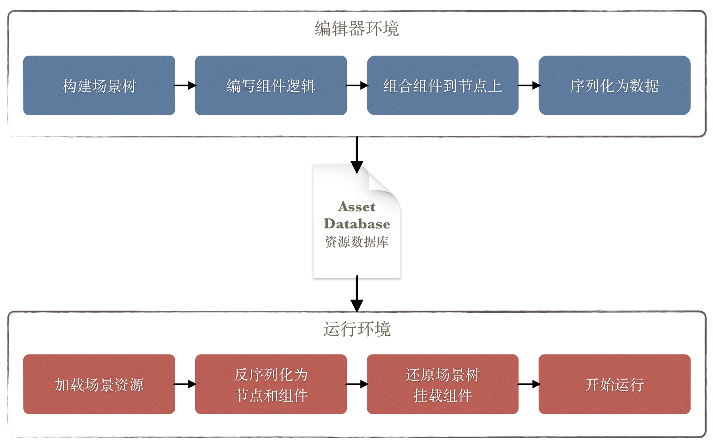

Cocos2d-x 用户上手指南
Cocos Creator 是一款以内容创作为导向的新型游戏开发工具，它完整集成了组件化的 Cocos2d-x WEB 版本，可发布游戏到 Web，iOS，Android，Mac，Windows等平台，更支持直接发布 Cocos Play 平台，把握手机页游渠道的快速发展带来的新机遇，更多关于 Cocos Creator 的介绍可参见介绍文档。
这篇文档旨在引导 Cocos2d-x 的用户开始使用 Cocos Creator 并尽量平滑得过渡到新编辑器的使用方式上来。文档中会讨论从 Cocos2d-x 到 Cocos Creator 开发中可能遇到的疑问并给出解答，不会深入到框架细节中去，而是以链接的方式给出不同部分的详细参考文档。
1. 典型误区
对于刚刚接触 Cocos Creator 的用户来说，可能会遇到下面几个典型的误区：
- 希望配合 Cocos2d-x 来使用 Cocos Creator：Cocos Creator 内部已经包含完整的 JavaScript WEB 引擎，不需要依赖 Cocos2d-x 即可开始工作。不过如果你希望发布原生版本，仍然需要电脑上有 Cocos2d-x 才可以。
- 先搭建整体代码框架，再堆游戏内容：Cocos Creator 的工作流是内容创作为导向的，所以对原型创作是非常友好的，编辑器中直接进行场景搭建和逻辑代码编写，即可驱动游戏场景运行起来，在下面的数据驱动章节会更详细介绍工作流上的变化
- 在编码的时候直接查看 Cocos2d-JS 的 API：Cocos Creator 可以说脱胎自 Cocos2d-JS，它们的 API 一脉相承，有很多相同的部分，但由于使用了全新的组件化框架，两者的 API 是有差异的，并且无法互相兼容
- 希望将旧的 Cocos2d-JS 游戏直接运行到 Cocos Creator 上：由于两者的 API 并不是100%兼容，所以这点是做不到的
- 用继承的方式扩展功能：在 Cocos2d-JS 中，继承是用来扩展节点功能的基本方法，但是在 Cocos Creator 中，不推荐对节点进行继承和扩展，节点只是一个实体，游戏逻辑应该实现在不同的组件中并组合到节点上
在文档开头就提及这些误区是希望开发者意识到，Cocos Creator 提供的工作流和开发思想和以往的 Cocos2d-x 引擎是存在很大差别的。为了更好得解答如何用正确的姿势在 Cocos Creator 中编码，下面两个章节会更详细介绍数据驱动带来的工作流变化和 API 层面的变化。
2. 数据驱动
在 Cocos2d-x 中，开发方式是以代码来驱动，游戏中的数据大多也是在代码中存储，除非开发者构建了自己的数据驱动框架。在 Cocos Creator 框架中，所有场景都会被序列化为纯数据，在运行时使用这些纯数据来重新构建场景，界面，动画甚至组件等元素。
何为代码驱动，何为数据驱动
为什么说 Cocos2d-x 是代码驱动的开发方式呢，举个例子，假设场景中有一个角色，它会不停地在一个区域来回走动，我们会写下面这样的代码：
var role = new cc.Sprite('role.png');
scene.addChild(role);
role.setPosition(100, 100);
var walk = cc.sequence(cc.moveBy(5, 100, 0), cc.moveBy(5, -100, 0)).repeatForever();
role.runAction(walk);在这段代码中，role 的场景关系，位置信息，行动区间，动画信息全部都是通过代码实现的，所以称为代码驱动。也有一些开发者会将数据信息保存在别的文件中，但是仍然逃不了需要自己实现数据的解析代码。甚至在使用一些传统编辑器的过程中，也需要 Parser 来将编辑器导出的数据解析为场景。
而 Cocos Creator 提供的是更加彻底的数据驱动方式，在编辑器中编辑的所有信息都会被序列化到数据文件中，在运行时，引擎会通过反序列化的方式将数据直接转化为对象。这个过程和上面描述的过程又一个本质的区别：引擎中类的属性是可直接被序列化和反序列化的，不需要通过任何映射关系来转化。上面例子中的场景树，位置属性，动画等都可以被编辑器序列化为数据，加载场景的过程，不需要任何代码，只需要从场景数据中反序列化出整个场景即可：
cc.director.loadScene('SampleScene');序列化
序列化和反序列化支持 Cocos Creator 中类的绝大多数公有属性，这些属性通过属性检查器面板暴露给开发者。开发者可以在编辑器中随意修改并保存，保存的过程就是将资源和场景数据序列化到资源数据库（Asset Database）中。反之，在加载场景的过程中，反序列化机制会根据场景数据实例化相应的对象，并还原编辑器中设置的所有属性。
不仅如此，数据驱动的强大之处在于，用户自己编辑的组件也可以进行属性声明。这些属性可以在编辑器中被编辑，也会被保存到场景数据中，最后在运行时被反序列化到游戏场景中。
资源数据库在编辑器中以资源管理器的形式呈现。
从数据驱动的角度理解 Cocos Creator 的工作流
与 Cocos2d-x 不同，Cocos Creator 的工作流是内容创作为导向的。也许开发者迁移过程中会遇到各种各样的困惑，但从数据驱动的角度来理解，这种工作流的变化就变得理所当然了。数据驱动使得场景可以被自由得进行编辑，不仅可以可视化得搭建整个场景，还可以对游戏逻辑进行编辑（编辑组件暴露出的属性）。这使得一切的入口点变成了编辑器，而不是代码。就像前面的示例，Cocos Creator 中，开发者首先用编辑器构建父子关系，摆放位置，设计动画；然后通过组件代码设计场景中节点的逻辑；最后将组件组合到不同的节点上。

3. Framework 层面的变化
开头已经提到，Cocos Creator 完整集成了组件化的 Cocos2d-JS。这是一个深度定制的版本，由于组件化的改造和数据驱动的需求，它与标准版本 Cocos2d-JS 拥有一脉相承但不互相兼容的 API 集。下面来具体说明一些重要的 API 差异：
逻辑树和渲染树
在 Cocos2d-JS 中，渲染器会遍历场景节点树来生成渲染队列，所以开发者构建的节点树实际上就是渲染树。而在 Cocos Creator 中我们引入了一个新的概念：逻辑树。开发者在编辑器中搭建的节点树和挂载的组件共同组成了逻辑树，其中节点构成实体单位，组件负责逻辑。
最重要的一点区别是：逻辑树关注的是游戏逻辑而不是渲染关系。
逻辑树会生成场景的渲染树，决定渲染顺序，不过开发者并不需要关心这些，只要在编辑器中保障显示效果正确即可。在编辑器的 Hierarchy 层级管理器中，开发者可以调整逻辑树的顺序和父子关系。
场景管理
在 Cocos2d-JS 中，开发者用代码搭建完场景，通过 cc.director.runScene 来切换场景。在 Cocos Creator 中，开发者在编辑器中搭建完的场景，所有数据会保存为一个 scene-name.fire 文件，存在资源数据库（Asset Database）中。开发者可以通过 cc.director.loadScene 来加载一个场景资源，参见具体范例：
var sceneName = 'scene-name';
var onLaunched = function () {
console.log('Scene ' + sceneName + ' launched');
};
// 第一个参数为场景的名字，第二个可选参数为场景加载后的回调函数
cc.director.loadScene(sceneName, onLaunched);此外，我们提供了访问场景节点的接口：
// 获取逻辑树的场景节点
var logicScene = cc.director.getScene();节点和组件
在 Cocos Creator 中，cc.Node 被替换为逻辑节点，旧的 Node 被改名为 _ccsg.Node，成为一个私有类，不再推荐使用。这么做的原因是开发者只需要关注逻辑节点即可，不需要关注底层的渲染节点。当然，我们尽量保留了它的 API 集，Transform 相关、节点树相关、Action 相关、属性等 API 都维持不变。
Cocos2d-JS 中曾经有一套简陋的组件机制，可以通过向 Node 添加组件并获得 onEnter、onExit、update 等回调。在 Cocos Creator 中，使用同样的接口 addComponent，只不过组件系统变成了整个引擎的核心，组件可以以各种各样的方式扩展逻辑节点的功能。甚至可以说，逻辑节点本身不应该包含任何实际游戏逻辑，它应该由各种逻辑组件组合出完整的逻辑。
这也导致了 Cocos2d-JS 和 Cocos Creator 中的最大区别：如何扩展节点的行为？
在 Cocos2d-JS 中可以通过继承来完成对各种节点类型的行为扩展，而在 Cocos Creator 中，请一定不要这样做，所有的扩展都应该通过添加组件的方式来完成。关于继承和组合的优劣之争由来已久，这里不做深入的探讨，但在 Cocos Creator 这样的组件式架构中，组合是最天然的扩展方式。
关于组件系统的更多信息可以参考节点和组件以及内置组件参考等章节。
坐标系和锚点
Cocos Creator 的坐标系仍然为左下角坐标系，不过在锚点上我们做了一些改变。先看图再解释：

假设一个背景节点的锚点为 (0.5, 0.5)，它拥有一个子节点，子节点位置为 (0, 0)，在 Cocos2d-JS 中将和左图中的表现一致，而在 Cocos Creator 中，将和右图一致。原因在于子节点的本地坐标系不同，在 Cocos2d-JS 设计中，不论父节点锚点位置如何，子节点坐标系的坐标原点都是父节点的左下角。而在 Cocos Creator 中，子节点坐标系的坐标原点就是父节点的坐标位置，也就是其锚点的位置。这样的修改对于编辑器更友好，一般对于用编辑器搭建的场景是非常自然的，而开发者在用代码构建节点时，就需要注意下了。
维持不变的类和对象
在 Cocos Creator 中，我们保留了很多重要类和对象的行为，包括：
cc.gamecc.viewcc.directorcc.audioEnginecc.eventManagercc.schedulercc.textureCachecc.syscc.visibleRect- 动作系统
- 部分渲染节点类型：Menu 和 MenuItem、ClippingNode、ProgressTimer、MotionStreak、ParallaxNode、RenderTexture、DrawNode、Tile map 相关类等
- Chipmunk 物理引擎和 PhysicsDebugNode
- 基础数据类型
有几点需要注意的：
- 上面保留的渲染节点类型只能和渲染树进行交互，不可以和逻辑节点以及组件混用。
- 动作系统不仅支持渲染节点，所有对 Transform 进行操作的动作也支持逻辑节点。
- 计时器（
cc.scheduler）支持组件，组件中拥有schedule、scheduleOnce、unschedule、unscheduleAllCallbacks接口 - 虽然保留了事件管理器，但是逻辑节点拥有一套新的事件 API，不建议直接使用事件管理器，具体参考后面关于事件系统的介绍
事件系统
在逻辑节点（cc.Node）中，我们添加了一系列全新的事件 API，从逻辑节点可以分发多种事件，也允许监听器向自己注册某种事件。监听器可以是一个简单的回调函数，也可以是回调函数和它的调用者组合，重要的API列表：
node.emit(type, detail)：通知所有监听type事件的监听器，可以发送一个附加参数。node.dispatchEvent(event)：发送一个事件给它的监听器，支持冒泡。node.on(type, callback, target)：持续监听node的type事件。node.once(type, callback, target)：监听一次node的type事件。node.off(type, callback, target)：取消监听所有type事件或取消type的某个监听器（用 callback 和 target 指定）。
这样的事件分发方式从集中由 cc.eventManager 分发，变为了拥有事件的节点本身分发自己的事件，可以说是集中式事件系统向离散式事件系统的转变。同时，Cocos Creator 还在节点中内建了鼠标和触摸两种系统事件：
| 枚举对象定义 | 对应的事件名 |
|---|---|
cc.Node.EventType.TOUCH_START |
'touchstart' |
cc.Node.EventType.TOUCH_MOVE |
'touchmove' |
cc.Node.EventType.TOUCH_END |
'touchend' |
cc.Node.EventType.TOUCH_CANCEL |
'touchcancel' |
cc.Node.EventType.MOUSE_DOWN |
'mousedown' |
cc.Node.EventType.MOUSE_ENTER |
'mouseenter' |
cc.Node.EventType.MOUSE_MOVE |
'mousemove' |
cc.Node.EventType.MOUSE_LEAVE |
'mouseleave' |
cc.Node.EventType.MOUSE_UP |
'mouseup' |
cc.Node.EventType.MOUSE_WHEEL |
'mousewheel' |
自此，开发者可以直接响应节点的各种鼠标和触摸事件，不再需要自己判断触点是否包含在节点中。此外，新的事件系统还支持事件冒泡，假设某个节点上触发了触摸事件，如果事件监听器中不停止冒泡，它的父节点也会触发同样的触摸事件。事件系统的具体使用方式可以参见监听和发射事件文档
4. 下一步
以上以非常概括的方式介绍了 Cocos Creator 的一些设计思路，以及从 Cocos2d-x 过渡过来的一些可能的障碍，无法覆盖到所有的知识点，本篇文档目标也不在于此，旨在让 Cocos2d-x 用户更轻松的上手 Cocos Creator。接下来，请继续阅读 Cocos Creator 用户手册，了解完整的工作流程和编程技巧。
继续前往 项目结构 介绍文档。